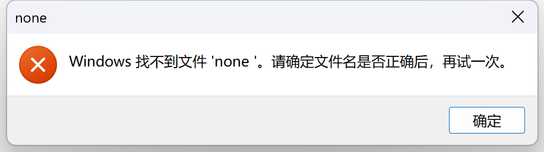

作业要求
前置要求
在进行本次作业前，请先阅读清软论坛说明，确保对项目的基本操作和开发流程有所了解。
代码风格测试
在该部分中，你需要为SimpleBBS增加代码风格检查，要求如下：
-
完善flake8配置文件
- 忽略并仅忽略以下文件夹：
.git文件夹、所有__pycache__文件夹、所有migrations文件夹 - 设置单行代码的最大长度为 100 字符
- 配置特定文件的错误忽略：
- 忽略
tests/test_api.py、driver.py的 E501 错误 - 忽略
user/views.py的 E722 错误 - 忽略
app/settings_prod.py的 F401 和 F403 错误
- 忽略
- 忽略并仅忽略以下文件夹：
-
完善格式化流程，将格式化和代码检查任务整合到
Makefile中，执行如下命令：- 使用
autopep8对代码自动格式化 - 使用
autoflake对代码自动格式化 - 使用
isort对代码自动格式化 - 使用
flake8检查代码风格
- 使用
-
评测时执行脚本检测是否正确格式化且符合 flake8 格式，评测流程如下：
make lint echo $?echo $?将返回上一条命令的退出状态。如果返回值为0，则表示代码格式化正确且通过了flake8检查；如果返回非零值，则表示代码未通过检查。 在 Windows 系统下，$?的语义有所不同，可以使用echo $LASTEXITCODE来获取上一条命令的退出状态。
正确性检查
经过正确配置 autoflake、autopep8、isort 对代码自动格式化后，执行 flake8 检查代码风格时，不会输出任何错误或警告。
单元测试
测试时请使用下面的命令
# 在 backend 目录下
python manage.py test --filter test_basic
补充基础函数和单元测试分别占 50%
在该部分中，同学们需要以测试驱动开发的方式补完下列函数，并使用 unittest 补充相应的单元测试
-
register_params_check函数，该函数在utils/register_params_check.py文件中，实现注册账号 API 参数的校验。接收参数如下：username: 必填，用户账号password: 必填，用户密码nickname: 必填，用户昵称mobile: 必填，手机号url: 必填，用户个人地址链接magic_number: 选填，用户喜欢的幸运数字
参数要求：
- 用户账号为长度 5-12 的字母串加数字，且必须包含这两种类型，字母串必须在数字前面，大写字母和小写字母均合法
- 用户密码为长度 8-15 的字符串，由大写、小写字母、数字和标点符号组成且必须包含这四种类型，有效的标点符号为-_*^
- 用户的手机号的格式为+[区号].[手机号]，其中区号必须为两位数字，手机号必须为 12 位数字，例如+12.123456789012
- 用户的个人地址链接包含协议和域名两部分
- 协议部分必须为 http:// 或者 https://
- 域名部分包含 1 到多个点
.，表示以点.分隔的长度大于 0 的标签序列，且总长度不超过 48 个字符（包含.）。标签序列只能由下列字符组成：- 大小写字母
A到Z和a到z - 数字
0到9，但最后一段顶级域名不能是纯数字（如163.com可以但163.126不可以） - 连字符
-，但不能作为首尾字符
- 大小写字母
- magic_number为非负数 int 数值，可选参数（在设计测试用例时无需考虑最大值上界）
返回值要求：
- 返回错误或缺失字段名（如有多个只需要按前述顺序返回第一个）以及一个 bool 值表示是否出错，这表示你需要按上述顺序依次检查每一个字段是否缺失或错误
- 如果正确，返回
"ok"以及True - 如果 magic_number 缺失，请为 content 添加默认值为 0 的 magic_number 字段
黑盒测试参数提示：
- 传入的内容为
JSON格式，其中Key可能为任何值，只需关注有用的字段即可，多余的Key忽略 - 传入的
JSON格式的内容中，Key对应的值可能不是预期的类型
-
对
register_params_check补充单元测试请在
tests/test_basic.py的TODO处补充相应的单元测试，并使得register params check.py行覆盖率不低于 80％，在文档中说明的所有测试用例应在测试代码中有完整体现。
集成测试
测试时请使用下面的命令
# 在 backend 目录下
python manage.py test --filter test_api
在该部分中，同学们需要为 SimpleBBS 添加集成测试，请补充 tests/test_api.py 中的 TODO 部分为注册路由、登录路由和登出路由添加测试，提供了部分注册路由测试代码供同学们参考。
同学们不需要自己构造测试样例，测试中已经构造了一个用户，具体信息请阅读 tests/test_api.py 中 APITestCase 类的 setUp 函数。
端到端测试
测试时请使用下面的命令
# 在 backend 目录下
python manage.py test --filter test_e2e
在该部分中，同学们需要在 tests/test_e2e.py 中使用 unittest 框架和 selenium 为 SimpleBBS 补充端到端测试，selenium 提供了自动化控制浏览器的能力，同学们需要使用 selenium 控制浏览器实现用户的登录、发帖、更新帖子、登出等操作，在 tests/test_e2e.py 中提供了实现自动登录的部分供同学们参考。
由于 selenium 需要用到 WebDriver 控制浏览器，可在如下链接下载对应浏览器类型及版本的 WebDriver ，并放置于 drivers 目录，将 tests/test_e2e.py 中的 DRIVER_PATH 变量指向 WebDriver 的实际路径，如果出现错误请首先仔细阅读 环境搭建 章节的内容。
注意事项
- 端到端测试需要使用浏览器和前端，但是由于助教已经在测试文件中启动了前端，所以你并不需要手动启动。
- 为了进行端到端的测试，后端同样会使用 8000 端口。因此，在开始测试之前，请确保关闭之前启动的后端服务，以避免端口冲突。
- 禁止通过直接访问客户端路由进行页面跳转。在端到端测试中，页面跳转必须通过点击按钮等用户操作实现，不允许通过修改 URL 或使用客户端路由来实现页面跳转，否则将扣除相应分数。
Windows 用户注意事项
使用 Windows 的同学在运行端到端测试时可能会出现如下提示

这是正常现象，不会影响测试结果，点击 确定 即可。
评测说明
- “代码风格测试”部分的评测采用脚本对代码风格进行检查，正确通过即可全分；
- “单元测试”部分采用黑盒脚本对基础函数进行测试，正确通过测试用例即可全分，单元测试人工评测，覆盖率达到要求，测试用例设计恰当合理即可全分；
- “集成测试”部分采用 Monkey Patch 对集成测试进行测试，同学们按照顺序正确测试路由函数即可全分
- “端到端测试”部分采用 Monkey Patch 对端到端测试进行测试，同学们按照顺序正确控制浏览器即可全分
- DDL 日期之后，按照 \(0.9^{迟交天数}\) 的衰减系数计算分数，迟交时间未满一天记作一天，最多不超过一周，一周后不再接受作业。
获取最新的内容
为了避免页面使用缓存
Windows 用户可以使用 Ctrl + Shift + R
Mac 用户可以使用 Command + Shift + R 来强制刷新页面，以获取最新的内容